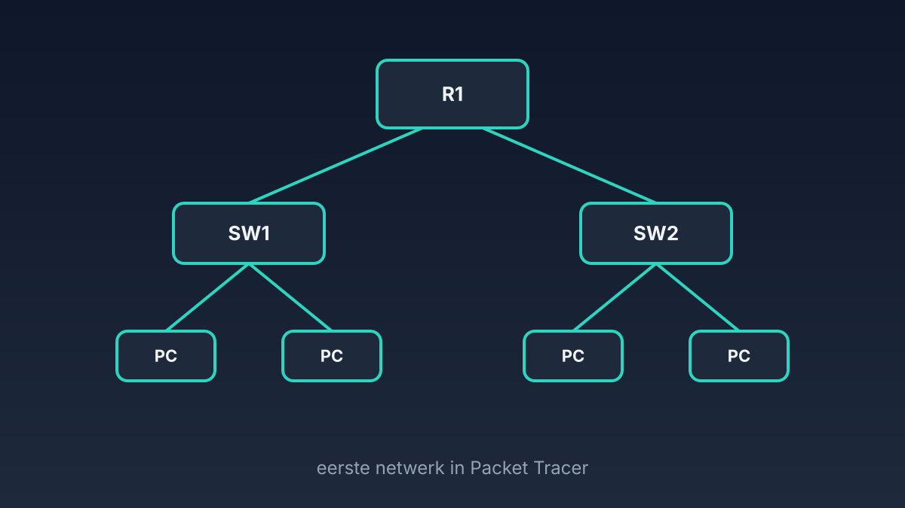

servers
Virtuele serveromgeving
Een kleine bedrijfsomgeving in VMware: een domeincontroller met Windows Server 2025 en twee clients met Windows 11.
Portfolio
Student met drive, letterlijk en figuurlijk.
Over mij
Ik studeer graduaat Systeem- en netwerkbeheer aan AP Hogeschool in Antwerpen.
Ik vind het leuk om te begrijpen hoe systemen werken en om ze zo op te zetten dat ze gewoon blijven draaien. Ik sta nog aan het begin, maar ik leer snel door zelf dingen op te bouwen: servers, netwerken en nu ook deze website.
Naast mijn studie werk ik als privéchauffeur bij GetDriven, en daarvoor was ik chauffeur bij bpost. Die jobs leerden me stipt, zelfstandig en klantvriendelijk te werken, ook als het druk is. Bekijk mijn projecten of neem contact met me op.
Mijn testdomein: mansour.local
servers
Een kleine bedrijfsomgeving in VMware: een domeincontroller met Windows Server 2025 en twee clients met Windows 11.

netwerk
Een router, twee switches en vier pc's verbonden en getest met ping.

web
Deze website, gebouwd met HTML en Tailwind CSS vanuit mijn eigen wireframes.